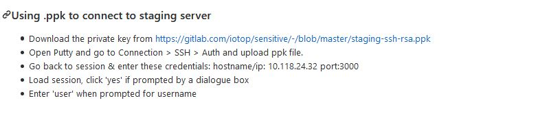
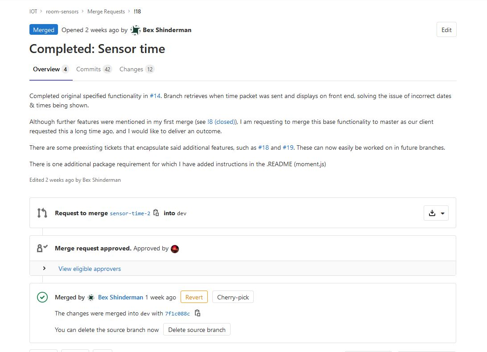
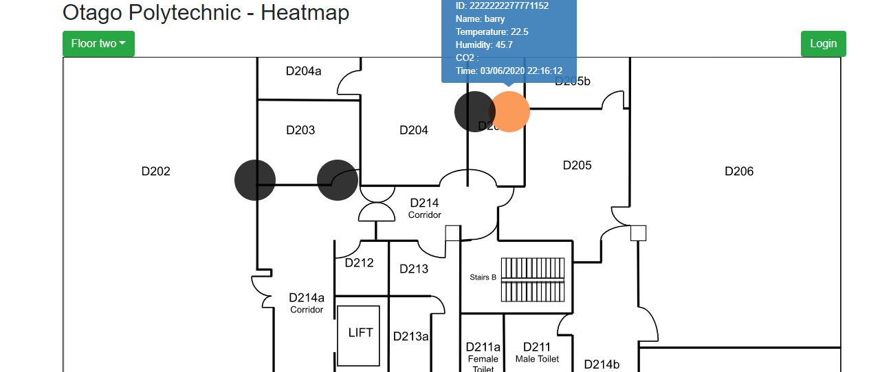

Sprint Five
I am much happier with my progress, and other team members are now actively coming to me for help regarding server & backend problems.During this sprint I proposed to the team that we create a "Staging deployment" and "Production deployment" collumn on the issue board. I proposed this because it was becoming ambiguous where things were to be deployed with our current one collumn, now that we had a staging server it simply made sense. Tickets are now moving across the board nicely and it's satisfying helping make peoples front end code come alive. It has occured to me that instead of having a production server for each app that we use a singular server once the reverse proxy is deployed.
Because I am feeling on top of things I have decided to revisit the ticket that I had trouble completing at the beginning of the semester. Strangely enough, now that I had a working knowledge of how the room sensor app after writing docs on deployment, completing the task of displaying the time a payload was sent was weirdly easy. In the past I had struggled to understand where to format the time variable and had been trying to convert it in the backend when in reality all I needed to do was format it on the front-end using a javascript library called moment. Getting this achieved felt like a huge success and my merge request was addressed quickly by my peers. I decided to make a fresh branch as the old one had become stale. I also made a fresh merge request and was careful to communicate why & not let anything get lost in translation.
During this sprint there was a security audit and I helped with updating credentials on the server, I also added things to documentation such as how to use a .ppk to connect to the db staging server to help my peers who were having trouble.


